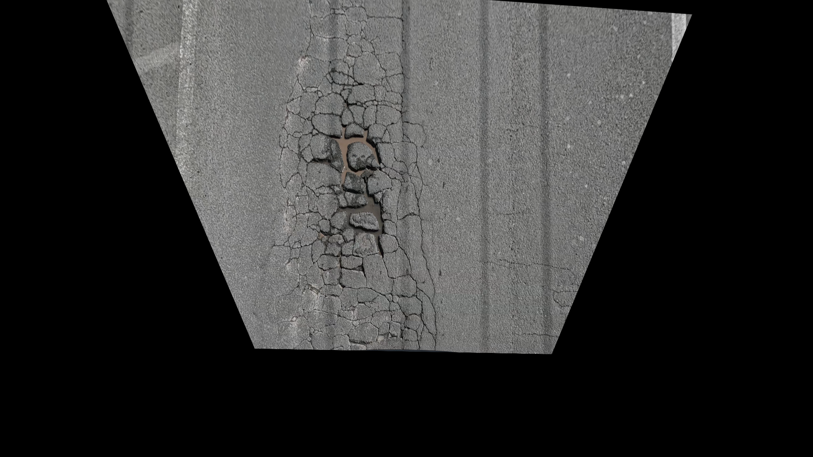
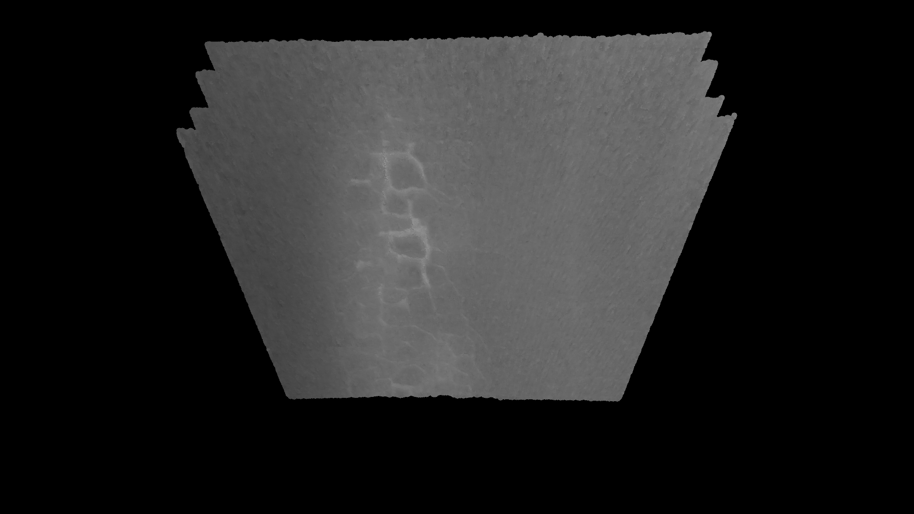

My Work

3D Reconstruction of Road Surface
This first involved extracting the frames from a road facing 120fps go-pro video captured on a moving vehicle. To extract the frames I wrote a python script that dynamically extracted overlapping frames based on the speed estimated from the GPS data available in the meta data of the video. Following this, the frames were passed to an incremental SFM (structure from motion) pipeline for 3D reconstruction and camera pose estimation involving SIFT based key-point matching, 8 Point algorithm for fundamental matrix estimation and linear triangulation. Fused GPS and IMU data for robust scale estimation.
 
Depth Map Generation
Generated depth maps by reprojecting 3D points of dense point cloud to 2D image plane using rotation and translation vector. Applied nearest interpolation to fill in sparse points.
Depth Map Generation
Generated depth maps by reprojecting 3D points of dense point cloud to 2D image plane using rotation and translation vector. Applied nearest interpolation to fill in sparse points.